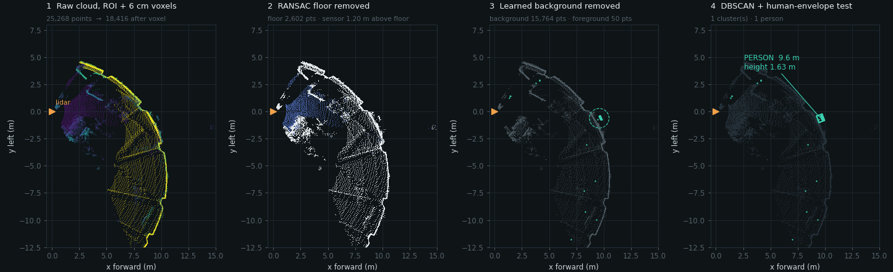
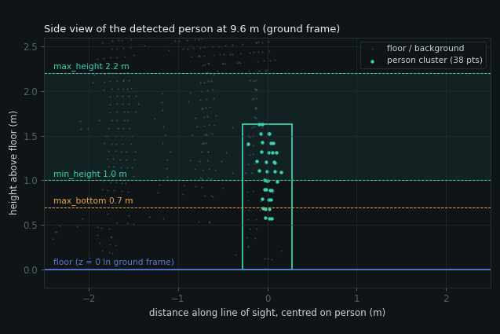

E1R Person Detection
Streams the RoboSense E1R solid-state lidar into ROS 2, shows the point cloud in RViz, and detects people in the field of view with a geometric pipeline: floor fit, learned background, clustering, a human-size test and tracking. It runs on the CPU and needs no GPU.
01Overview
The project has two parts. The official RoboSense driver (rslidar_sdk) turns the lidar's UDP packets into a PointCloud2 on /rslidar_points. Our package e1r_person_detection subscribes to that cloud, finds people and publishes boxes for RViz, a list of positions, and a simple true/false "someone is here" flag.
Step 1: view
e1r_view.launch.py starts the driver and RViz. Use it to check the lidar works and is oriented correctly.
Step 2: detect
e1r_person_detection.launch.py adds the detector. fake:=true swaps in a simulated lidar so you can test without hardware.
Assumption: the lidar is static. The detector learns the empty room during the first 90 frames (~9 s) and ignores it afterwards. Keep the view clear while it starts. On a moving robot, set use_background: false.
02Hardware & network setup
The lidar body speaks automotive ethernet (1000BASE-T1). The interface box converts it to a normal RJ45 port, and that port works only at gigabit speed.
Power and wire it. Supply 9–16 V into the interface box (green LED steady), plug in the lidar, and connect the box's RJ45 to a gigabit ethernet port. A link that only reaches 100 Mbps (bad or 2-pair cable, slow USB adapter) carries no data at all.
Find the interface and check the link speed.
baship -br link # e.g. enp2s0 cat /sys/class/net/enp2s0/speed # must print 1000
Give the PC the lidar's host address. This creates a NetworkManager profile
robosense-e1rthat comes up whenever the cable is plugged in.bashscripts/setup_network.sh enp2s0 # 192.168.1.102/16, profile "robosense-e1r" ping -c 3 192.168.1.200Confirm packets arrive. No root needed.
bash · expected outputpython3 scripts/check_lidar.py enp2s0 # enp2s0 8794 # MSOP (point data) port 6699: 2880 pkt/s from 192.168.1.200, sizes [1200] # DIFOP (device info) port 7788: 50 pkt/s from 192.168.1.200, sizes [256] # OK - lidar data is arriving.
03Software install
Ubuntu 22.04 with ROS 2 Humble already installed.
git clone --recursive https://github.com/satwikio/robosense_e1r_person_detection.git cd robosense_e1r_person_detection # forgot --recursive? git submodule update --init --recursive sudo apt install libpcap-dev libyaml-cpp-dev # the driver needs pcap.h pip install --user "numpy<2" "scipy>=1.10,<1.14" "scikit-learn>=1.3,<1.6" # (or: sudo apt install python3-sklearn python3-scipy, if numpy comes from apt too) cd ros2_ws source /opt/ros/humble/setup.bash colcon build --cmake-args -DCMAKE_BUILD_TYPE=Release source install/setup.bash cd src/e1r_person_detection && python3 -m pytest -q test # 7 passed, no ROS or lidar needed
Keep NumPy below 2. ROS 2 Humble's Python packages are built against NumPy 1.x. Mixing a pip NumPy 1.26 with apt's SciPy 1.8 prints version warnings, which is why SciPy and scikit-learn are installed with pip as well.
Edits to config/*.yaml need a rebuild. The launch files read the copy in install/. After changing src/.../detector.yaml, run colcon build --packages-select e1r_person_detection (or build once with --symlink-install).
04Dataflow
Processes (solid), ROS topics (dashed) and who consumes them. Everything after the driver is our code.
~/ expands to /person_detector/. All outputs are in the lidar frame rslidar; there is no TF tree to set up. ~/foreground is only published while something subscribes to it.| Topic / service | Type | Content |
|---|---|---|
/rslidar_points | sensor_msgs/PointCloud2 | Raw cloud from the driver: x, y, z, intensity. ~25k points at 10 Hz. |
/person_detector/person_present | std_msgs/Bool | true while at least one confirmed person is in view. Published every frame. |
/person_detector/persons | geometry_msgs/PoseArray | Box centre and orientation of every confirmed person. |
/person_detector/markers | visualization_msgs/MarkerArray | Green boxes and "person N X m" labels; orange rejected clusters when show_rejected: true. |
/person_detector/foreground | sensor_msgs/PointCloud2 | Points left after removing floor and background. The quickest way to see what the detector "sees". |
/person_detector/relearn_background | std_srvs/Trigger | Forget the background and learn it again (clear the view first). |
05File structure
Teal entries are this project's code. The two RoboSense packages are git submodules and are never edited.
docs/img/)/rslidar_pointslidar_type: RSE1, ports, 30 m range, frame rslidarfake, rviz, lidar_config, detector_configDetectorParams fields become ROS parameters automatically/rslidar_pointsperson_detector, fake_lidar06How detection works
Every frame goes through the same pipeline in detector.py. No machine learning: each step is geometry with a few tunable numbers.
background_learn_frames frames the detector only learns; nothing is clustered or reported.The same steps on a real frame
Frame 152 of a 20 s recording from the bench setup: lidar upright, 1.20 m above the floor, one person walking about 9.6 m away. Top-down view, lidar at the orange triangle looking along +x.

The human-envelope test
Each cluster is measured in the ground frame and must pass every check. A failed check is listed in the rejection reason (visible with show_rejected: true).

min_height and max_height, and the lowest point (0.57 m) is below max_bottom, so the cluster "touches" the floor. At 9.6 m the lidar's rays are sparse near the feet, which is why max_bottom is generous.| Check | Parameter | Default | Rejects |
|---|---|---|---|
| Top of cluster | min_height … max_height | 1.0 – 2.2 m | low furniture, pets, shelves taller than a person |
| Vertical extent | min_vertical_extent | ≥ 0.7 m | floating objects, table tops |
| Lowest point | max_bottom | ≤ 0.7 m | things hanging from the ceiling, wall-mounted items |
| Footprint length | min_footprint_major … max_footprint_major | 0.15 – 1.2 m | thin poles, cars, long walls |
| Footprint width | max_footprint_minor | ≤ 0.9 m | wide objects |
Why the background model matters
Shape alone cannot tell a person from a coat stand or a pole. The background model removes everything that was there during learning: a 0.2 m voxel is background if it was occupied in at least 60 % of the learning frames. People walking during learning do not stay in one voxel long enough to be absorbed. Someone standing still during learning does become background; call relearn_background once they leave.
07Tracking
tracker.py turns per-frame detections into stable, numbered people and filters one-frame false positives.
- Association: each track predicts its position with constant velocity; detections are matched by the Hungarian algorithm on floor-plane distance, rejecting matches beyond
track_gate(1.0 m). - Confirm: a new person is reported after
confirm_frames: 3hits (0.3 s), which suppresses single-frame noise. - Coast: a confirmed person stays reported through
coast_frames: 8missed frames (0.8 s). This bridges a person passing behind a pole or other background object, which costs them points for about 0.7 s.
08Configuration
All in config/detector.yaml. Any field of DetectorParams in detector.py can be set there, even if it is not listed in the file yet. Rebuild after editing.
| Parameter | Current | What it does / when to change |
|---|---|---|
mount_roll_deg, mount_pitch_deg | 0, 0 | Which way is "up" for the floor search. Upside-down mount: roll 180. Wrong value → the ceiling is taken as the floor. |
max_range | 20 m | Ignore points further away. Lower it to cut false positives at long range. |
voxel_size | 0.06 m | Downsampling grid. Larger = faster, fewer points per person. |
use_background | true | Set false on a moving platform (shape test only, more false positives). |
background_learn_frames | 90 | Learning time in frames (90 = 9 s). Longer = steadier background. |
background_voxel, background_min_ratio | 0.2 m, 0.6 | Background resolution and occupancy threshold. 0.15 m caused false positives; a low ratio absorbs passers-by. |
ground_seed_fraction | 0.15 | RANSAC samples from this lowest fraction of points. Raise if the floor covers most of the view. |
ground_min_inliers | 0.03 | Minimum floor share of points before the fit is trusted. |
cluster_eps, min_cluster_points | 0.30 m, 12 | DBSCAN neighbour distance and minimum cluster size. Lower the size for people far away; raise eps if a person splits in two. |
min_height | 1.0 m | Lower (e.g. 0.6) for children or seated people. |
max_bottom | 0.7 m | Raise if legs are hidden (lidar low, behind a desk). |
confirm_frames, coast_frames, max_missed_frames | 3, 8, 15 | Tracker timing. More confirm frames = fewer false alarms, slower reaction. |
show_rejected | false | Draw rejected clusters as orange boxes. Turn on while tuning. |
Tuning loop
Set
show_rejected: true, rebuild, launch, and enable the Foreground display in RViz.Walk the area. A person drawn orange means a check failed; the log does not print the reason, so use the replay script below to print it.
Change one parameter, rebuild, repeat. Record a test walk once and replay it offline so every change is compared on the same data.
09Commands
Run from ros2_ws/ after source install/setup.bash.
Run
ros2 launch e1r_person_detection e1r_view.launch.py # driver + RViz only ros2 launch e1r_person_detection e1r_person_detection.launch.py # driver + detector + RViz ros2 launch e1r_person_detection e1r_person_detection.launch.py rviz:=false # headless ros2 launch e1r_person_detection e1r_person_detection.launch.py fake:=true # simulated lidar, no hardware ros2 launch e1r_person_detection e1r_person_detection.launch.py detector_config:=/path/to/my.yaml rviz2 -d install/e1r_person_detection/share/e1r_person_detection/rviz/e1r.rviz # RViz on its own
Inspect
ros2 topic echo /person_detector/person_present --field data ros2 topic echo /person_detector/persons ros2 topic echo /rslidar_points --qos-reliability reliable --field width # points per frame ros2 param get /person_detector background_learn_frames ros2 param list /person_detector # re-learn the empty room (after moving the lidar or furniture) ros2 service call /person_detector/relearn_background std_srvs/srv/Trigger
ros2 topic hz /rslidar_points under-reports. It always subscribes best-effort, and best-effort DDS drops most 0.5 MB clouds (you may see ~2 Hz). Trust the detector's own log line, 10.0 Hz, 23 ms/frame, persons: N, printed every 5 s.
Record and replay
# record raw clouds (~5 MB/s) while the driver runs ros2 bag record /rslidar_points -o walk_test # later, without the lidar: start only the detector (+ RViz), then play the bag ros2 run e1r_person_detection person_detector --ros-args \ --params-file install/e1r_person_detection/share/e1r_person_detection/config/detector.yaml ros2 bag play walk_test
Build and test
colcon build --packages-select e1r_person_detection # after editing our code or config colcon build --cmake-args -DCMAKE_BUILD_TYPE=Release # everything cd src/e1r_person_detection && python3 -m pytest -q test
Stop
Press Ctrl + C in the launch terminal. rslidar_sdk_node ignores SIGTERM, so a plain kill leaves the driver running and a second launch then runs two drivers. To clean up:
pkill -INT -f "rslidar_sdk_node --ros-args"; pkill -INT -f "person_detector --ros-args"
ps -eo pid,args | grep -E "rslidar_sdk_node|person_detector|rviz2" | grep -v grep # should print nothing10Debugging
Symptom → first check
| Symptom | Check | Likely cause / fix |
|---|---|---|
NIC rx_packets does not grow at all | cat /sys/class/net/IF/speed, box LED | Physical layer. Link at 100 Mbps (cable or adapter), no power, lidar not woken (KL15). |
| ~1 packet/s only | ip -br addr show IF | Those are the lidar's ARP requests. The PC does not own 192.168.1.102: run setup_network.sh. |
Packets arrive, no /rslidar_points | driver log, check_lidar.py | Another process holds UDP 6699 (old driver still running), or wrong config_path. |
| Cloud at ~2 Hz in RViz | RViz display QoS | Set the PointCloud2 display's reliability to Reliable (already set in e1r.rviz). |
| Scene upside down, or ceiling treated as floor | mount_roll_deg | Lidar mounted inverted: set mount_roll_deg: 180. |
| Nobody detected | Foreground display, show_rejected | Person was standing still during learning (relearn), or a size check fails (see replay below). |
| False boxes on objects | show_rejected, replay | Object moved after learning (relearn), or tighten the envelope / lower max_range. |
| Config change has no effect | ros2 param get | Not rebuilt: launch reads install/, not src/. |
pcap.h: No such file during build | sudo apt install libpcap-dev |
Watch the packet counter
The NIC counter is the decisive signal: a live, correctly addressed E1R produces about 3,000 packets per second.
IF=enp2s0; a=$(cat /sys/class/net/$IF/statistics/rx_packets); sleep 5
echo "$(( ($(cat /sys/class/net/$IF/statistics/rx_packets) - a) / 5 )) pkt/s"
sudo tcpdump -i $IF -n -c 20 # see what actually arrives (ARP? UDP 6699?)Grab one cloud and check orientation
Saves a cloud to .npy and prints the rate and coordinate ranges. With the lidar upright, x is forward and the floor should sit at negative z (about −sensor height).
import sys, time, numpy as np, rclpy from rclpy.qos import QoSProfile, ReliabilityPolicy from sensor_msgs.msg import PointCloud2 from sensor_msgs_py import point_cloud2 rclpy.init(); node = rclpy.create_node("grab_cloud") stamps, last = [], [None] def cb(msg): stamps.append(time.time()); last[0] = msg node.create_subscription(PointCloud2, "/rslidar_points", cb, QoSProfile(depth=5, reliability=ReliabilityPolicy.RELIABLE)) # RELIABLE! while len(stamps) < 30: rclpy.spin_once(node, timeout_sec=0.1) xyz = point_cloud2.read_points_numpy(last[0], field_names=("x", "y", "z")) print(f"{(len(stamps)-1)/(stamps[-1]-stamps[0]):.1f} Hz, {len(xyz)} points") for i, a in enumerate("xyz"): print(a, np.percentile(xyz[:, i], [1, 50, 99]).round(2)) np.save("cloud.npy", xyz)
Check the floor fit offline
import numpy as np from e1r_person_detection.detector import PersonDetector, DetectorParams pts = np.load("cloud.npy").astype(np.float64) for roll in (0.0, 180.0): det = PersonDetector(DetectorParams(use_background=False, mount_roll_deg=roll)) fit = det._fit_ground(pts) print(roll, "no floor" if fit is None else f"normal {fit[0].round(3)}, sensor height {fit[1]:.2f} m") # the right mount gives the real height (e.g. 1.20 m); the wrong one finds the ceiling
Record frames and replay them with reasons
Record a walk once, then replay it through the detector with any parameter changed. Prints every cluster with its pass/fail reason, which the ROS node does not log.
# python3 record.py 200 walk.npz (200 frames = 20 s) import sys, numpy as np, rclpy from rclpy.qos import QoSProfile, ReliabilityPolicy from sensor_msgs.msg import PointCloud2 from sensor_msgs_py import point_cloud2 N, out = int(sys.argv[1]), sys.argv[2] rclpy.init(); node = rclpy.create_node("record_clouds"); clouds = [] node.create_subscription(PointCloud2, "/rslidar_points", lambda m: clouds.append(point_cloud2.read_points_numpy(m, field_names=("x", "y", "z"))), QoSProfile(depth=10, reliability=ReliabilityPolicy.RELIABLE)) while len(clouds) < N: rclpy.spin_once(node, timeout_sec=0.1) np.savez_compressed(out, *clouds)
# source install/setup.bash, cd src/e1r_person_detection (reads config/detector.yaml), then: # python3 replay.py walk.npz min_height=0.8 max_range=15 import sys, yaml, numpy as np from e1r_person_detection.detector import DetectorParams, PersonDetector z = np.load(sys.argv[1]); clouds = [z[f"arr_{i}"].astype(np.float64) for i in range(len(z.files))] cfg = yaml.safe_load(open("config/detector.yaml"))["person_detector"]["ros__parameters"] kw = {k: v for k, v in cfg.items() if k in DetectorParams.__dataclass_fields__} for arg in sys.argv[2:]: # overrides: name=value k, v = arg.split("="); kw[k] = type(getattr(DetectorParams(), k))(eval(v)) det = PersonDetector(DetectorParams(**kw)) for i, c in enumerate(clouds): res = det.process(c) if res.learning: continue for d in res.detections: print(f"frame {i:3d} {'PERSON' if d.is_person else 'reject'} r={d.range:4.1f} m " f"h={d.size[2]:.2f} n={d.num_points:3d} {d.reason}")
$ python3 replay.py walk.npz frame 99 PERSON r=11.7 m h=1.57 n= 19 ok frame 152 PERSON r= 9.6 m h=1.63 n= 38 ok frame 182 PERSON r= 8.7 m h=1.65 n= 82 ok $ python3 replay.py walk.npz min_height=1.7 # what if heads had to be above 1.7 m? frame 99 reject r=11.7 m h=1.57 n= 19 fail: top 1.57m
11Performance
Measured live for 30 s on a laptop with an AMD Ryzen 7 7735HS (8 cores / 16 threads) and 13 GB RAM, lidar at 10 Hz with ~25k points per frame.
| Process | CPU (of one core) | RAM | GPU |
|---|---|---|---|
rslidar_sdk_node | 5 % | 40 MB | none |
person_detector | 26 % | 175 MB | none |
| RViz (optional) | 9 % | 200 MB | ~5 % of integrated GPU |
| Total, headless | ~31 % | ~215 MB | none |
- A frame takes ~23 ms of the 100 ms budget. The algorithm itself is ~14 ms; the rest is converting the ROS message and publishing.
- The launch file pins the detector to one BLAS thread (
OMP_NUM_THREADS=1). With numpy's default thread pool the same work used 52 % of a core. - Any 2-core x86 machine with 2 GB RAM is enough without RViz. ARM boards (Raspberry Pi 5, Jetson) should work but are untested; expect 2–4× slower.
12Known pitfalls
Gigabit or nothing
The interface box RJ45 does not fall back to 100 Mbps. Two USB adapters at 100 Mbps received zero packets; a gigabit port worked at once.
The PC must own 192.168.1.102
The lidar sends unicast and waits for an ARP reply. Until the address is set you only see ~1 ARP packet per second.
Subscribe RELIABLE
A cloud is ~0.5 MB. Best-effort DDS dropped ~80 % of frames. RViz displays and the detector use Reliable.
Fast PointCloud2 in Python
Assign msg.data = array.array('B', buf), never raw bytes (100 ms vs 0.1 ms per cloud in Humble).
Mounting decides "up"
An inverted lidar without mount_roll_deg: 180 takes the ceiling as the floor and finds nobody.
Floor can be tiny
With a table blocking the near view, the floor was 5 % of points. RANSAC therefore samples from the lowest points.
Stand still = background
Anyone motionless during the 9 s learning period is learned as background. Relearn once they leave.
Driver ignores SIGTERM
Stop with Ctrl+C / SIGINT, or two drivers end up running.
Next steps: tune detector.yaml for the deployment room. If geometric false positives remain a problem, a learned detector such as PointPillars is the upgrade path (that one would need a GPU).